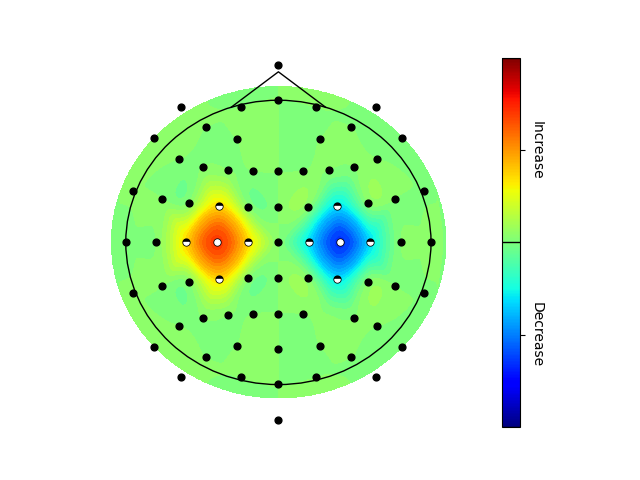

Topoplot#
The following code example shows how to create a topoplot.
import numpy as np
import matplotlib
matplotlib.use("Qt5agg")
import matplotlib.pyplot as plt
import finn.visualization.topoplot as tp
##Generate some demo data
#Values to be plotted
values_1 = [ 0,
0, 0, 0,
0, 0, 0, 5, 0, 0, 0, # <-- Omitting this blob (5)
0, 0, 0, 0, 0, 0, 0, 0, 0, 0, 0,
0, 0, 0, 1, 0, 0, 0, -1, 0, 0, 0,
0, 0, 1, 2, 1, 0, -1, -2, -1, 0, 0,
0, 0, 0, 1, 0, 0, 0, -1, 0, 0, 0,
0, 0, 0, 0, 0, 0, 0, -5, 0, 0, 0, # <-- Substituting this blob (-5)
0, 0, 0, 0, 0, 0, 0,
0, 0, 0,
0]
#Significance values before multiple comparison correction (boolean)
values_2 = [ 0,
0, 0, 0,
0, 0, 0, 0, 0, 0, 0,
0, 0, 0, 0, 0, 0, 0, 0, 0, 0, 0,
0, 0, 0, 1, 0, 0, 0, 1, 0, 0, 0,
0, 0, 1, 1, 1, 0, 1, 1, 1, 0, 0,
0, 0, 0, 1, 0, 0, 0, 1, 0, 0, 0,
0, 0, 0, 0, 0, 0, 0, 0, 0, 0, 0,
0, 0, 0, 0, 0, 0, 0,
0, 0, 0,
0]
#Significance values after multiple comparison correction (boolean)
values_3 = [ 0,
0, 0, 0,
0, 0, 0, 0, 0, 0, 0,
0, 0, 0, 0, 0, 0, 0, 0, 0, 0, 0,
0, 0, 0, 0, 0, 0, 0, 0, 0, 0, 0,
0, 0, 0, 1, 0, 0, 0, 1, 0, 0, 0,
0, 0, 0, 0, 0, 0, 0, 0, 0, 0, 0,
0, 0, 0, 0, 0, 0, 0, 0, 0, 0, 0,
0, 0, 0, 0, 0, 0, 0,
0, 0, 0,
0]
ch_name_list = [ 'Nz',
'Fp1', 'Fpz', 'Fp2',
'AF9', 'AF7', 'AF3', 'AFz', 'AF4', 'AF8', 'AF10',
'F9', 'F7', 'F5', 'F3', 'F1', 'Fz', 'F2', 'F4', 'F6', 'F8', 'F10',
'FT9', 'FT7', 'FC5', 'FC3', 'FC1', 'FCz', 'FC2', 'FC4', 'FC6', 'FT8', 'FT10',
'T9', 'T7', 'C5', 'C3', 'C1', 'Cz', 'C2', 'C4', 'C6', 'T8', 'T10',
'TP9', 'TP7', 'CP5', 'CP3', 'CP1', 'CPz', 'CP2', 'CP4', 'CP6', 'TP8', 'TP10',
'P9', 'P7', 'P5', 'P3', 'P1', 'Pz', 'P2', 'P4', 'P6', 'P8', 'P10',
'PO9', 'PO7', 'PO3', 'POz', 'PO4', 'PO8', 'PO10',
'O1', 'Oz', 'O2',
'Iz']
omit_channels = ["AFz"]
substitute_channels = [{"src" : ["CP4", "PO4", "P2", "P6"], "tgt" : "P4"},]
v_min = -3
v_max = 3
file_path = "./test.svg"
screen_channels = False
annotate_ch_names = False
v_border_values = [0]
v_border_labels = ["Decrease", "Increase"]
##Visualize demo data
topo = tp.topoplot("EEG")
#Plot w/o significances
topo.run(values_1, ch_name_list, omit_channels, substitute_channels, v_min, v_max, v_border_values, v_border_labels, file_path, screen_channels, annotate_ch_names)
#Plot with significances before multiple comparison correction (MCC) only
topo.run(np.asarray([values_1, values_2]).transpose(), ch_name_list, omit_channels, substitute_channels, v_min, v_max, v_border_values, v_border_labels, file_path, screen_channels, annotate_ch_names)
#Plot with significances after MCC only
topo.run(np.asarray([values_1, values_2, values_3]).transpose(), ch_name_list, omit_channels, substitute_channels, v_min, v_max, v_border_values, v_border_labels, file_path, screen_channels, annotate_ch_names)
plt.show(block = True)
Significance in the topoplot may be (optionally) indicated as significant after multiple comparison correction (mcc), full dots, before mcc correction, half dots, and not significant while effect sizes can be color encoded.
